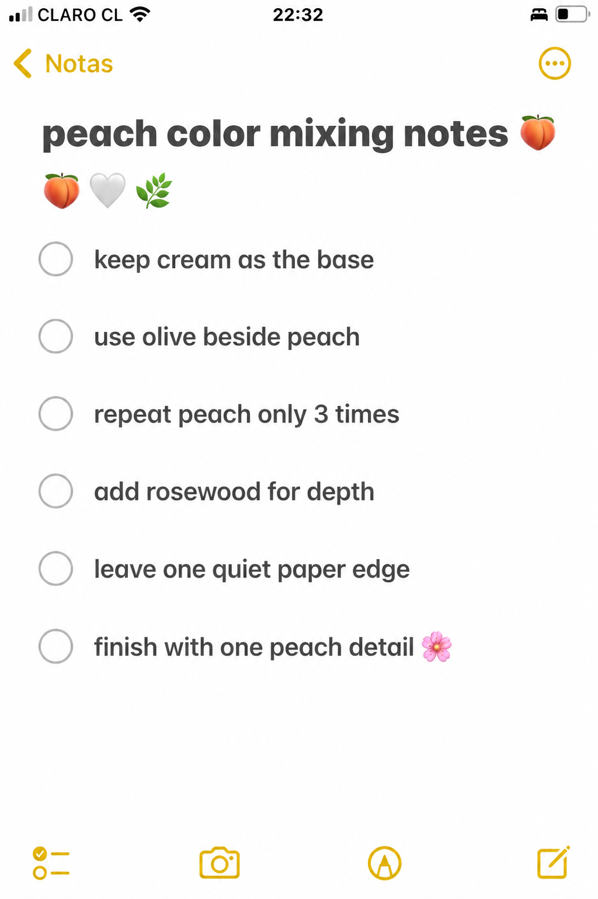
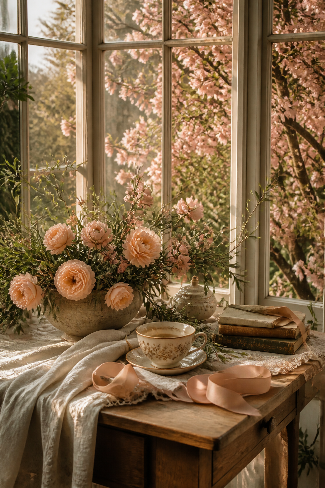
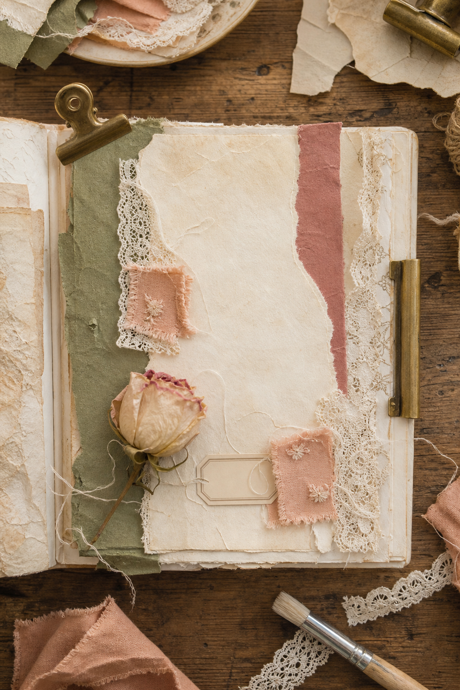
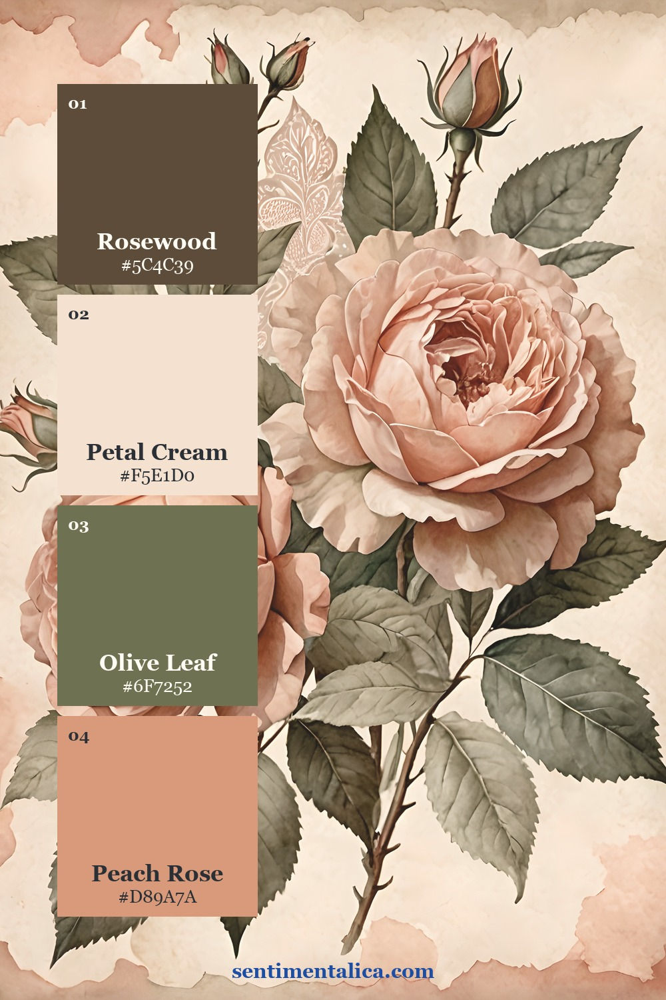
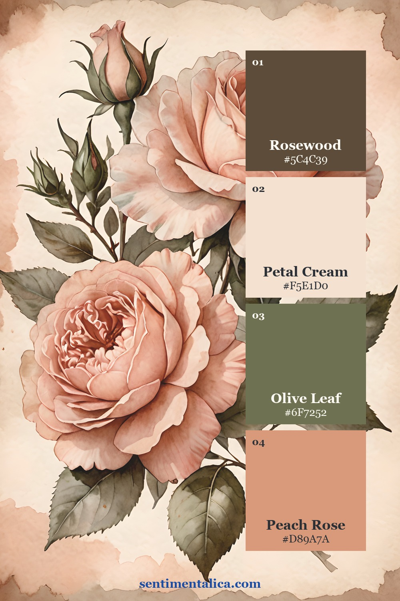
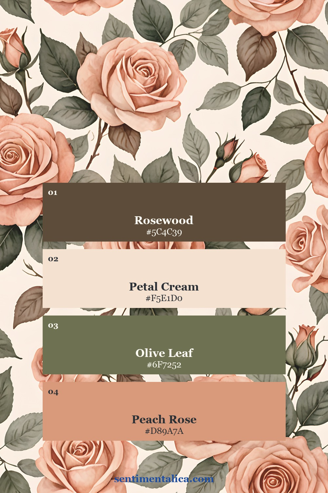
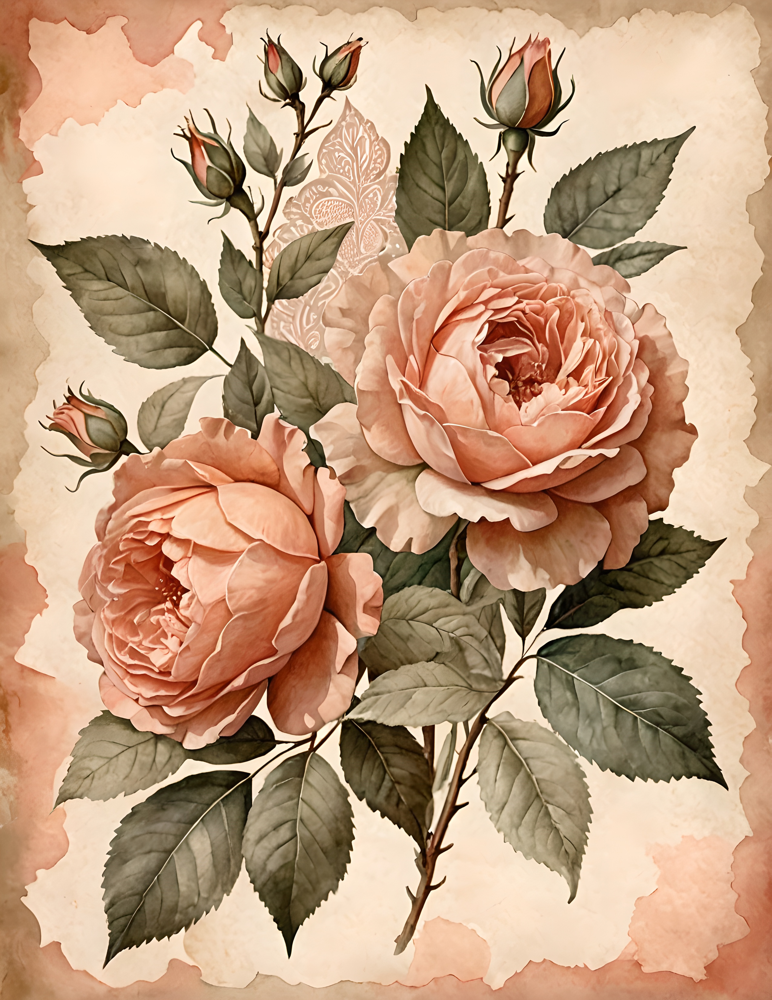
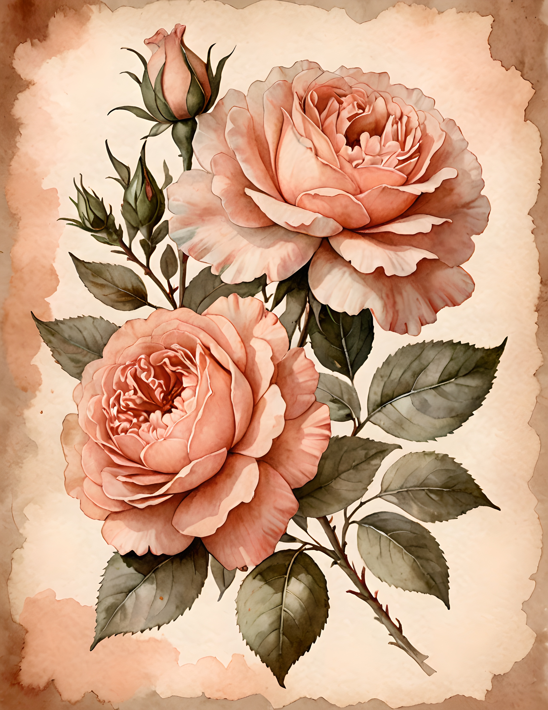
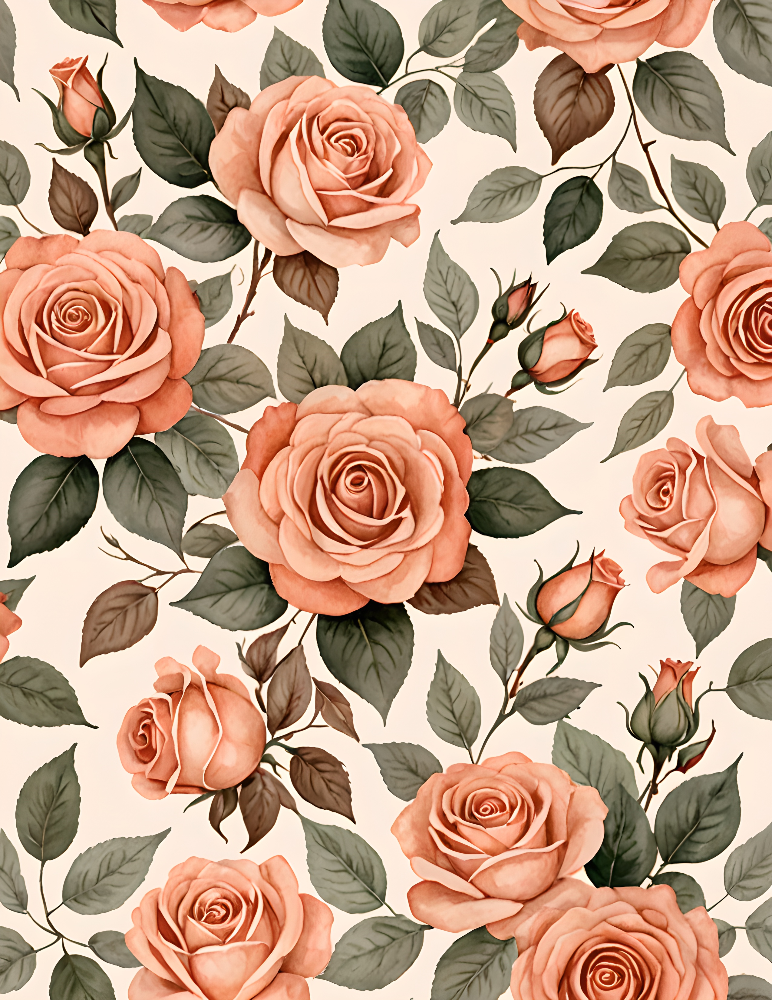

Peach can look beautifully faded or unexpectedly sugary. The difference usually comes from its supporting colors. Cream softens it, olive gives it age, and rosewood adds enough depth to keep the finished journal page from floating away.

Let cream occupy the most space
Use petal cream for the base paper, writing area, lace, or label. When cream is clearly the largest color, peach reads as a glow instead of a coating. It also gives printed rose imagery room to keep its delicate edges.
A good test is to cover the peach details with your hand. The page should still have a complete cream-and-olive structure underneath. If it collapses without the peach, the accent is doing too much work.
Use olive as the bridge
Olive connects warm petals to aged paper because it contains both green and earthy yellow. Choose a muted leaf tone, not a bright spring green. One olive torn layer or ribbon is usually enough; smaller leaf details can repeat it naturally.

Place olive beside peach at least once. That contact makes the relationship look intentional. Elsewhere, let cream separate them so the page does not become a continuous floral field.
Add one rosewood line for depth
Rosewood may come from a dark ribbon, book edge, ink line, clip, or narrow paper strip. It should be the smallest or second-smallest color. Its purpose is to sharpen the soft layers, especially near the main cluster.

Build in this order: cream base, olive support, rosewood edge, peach details. Saving peach for last makes it easier to stop after two or three repetitions. One peach fabric scrap, one rose, and one ribbon fold can be plenty.
Check warm and cool undertones before gluing
Place every material on the same sheet of cream paper and look at it in daylight. A very pink peach can fight with yellowed lace, while a neon olive can make the flowers look grey. Choose peach that leans toward apricot and olive that leans toward dried leaves. Rosewood should look brown-red rather than purple.
If one piece feels separate, do not search for another new color to connect it. Replace that piece or repeat its undertone in a tiny detail. A peach thread can warm a cool label, while an olive pencil line can settle a bright floral edge.
Three real-page palette studies
The branch compositions show how olive leaves prevent peach roses from feeling weightless. The repeating floral page is busier, but the cream spaces between blooms still matter. Notice that the darkest leaf and stem tones are doing more work than their small area suggests.



If your page needs one small companion flower, choose a cream bloom or olive botanical from the 100 free floral pictures. Avoid adding pink, lilac, and blue flowers all at once. The restraint is what makes peach feel grown-up.
See the mix in real pages



Peach Petal is a commercial-use watercolor image pack of peach roses, romantic botanical arrangements, and vintage warm paper. Use the imagery as a starting point, then bring in your own lace, notes, and keepsakes.
A romantic palette does not need more pink. Give peach a cream room, an olive companion, and one rosewood shadow. The page will feel soft because it is balanced, not because every detail is pale. Find more color guidance in the Sentimentalica journal.